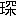
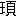
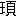

所謂先秦の古書は其の最初編成されてより以後、或は増竄を生じ、或は錯脱を生じ、今日現存せる篇帙が最初のものと異つて來てゐることは、何れの書にも通有の事實であつて、幾んど原形のまゝの者はないと謂ふも過言ではあるまいと思ふ。但だ其中で兩漢六朝以後に竄亂されたものは明かに之を僞書として鑑別することになつてゐるが、其以前に竄亂されたものは大抵之を看遁す傾になつてゐる。今早くより竄亂附加あることの明かなる例を擧ぐれば、例へば管子の中にて末尾の諸篇即ち牧民解以下は牧民以下の諸篇の解釋が多く、其他のものも後から附け加へられたものと思はるゝに拘らず、史記管晏傳の贊には既に此の後に附加せられた諸篇中の輕重篇を讀んだ事を書いてある。してみれば管子が最初出來た時の形から段々變化してゐたことは太史公以前からであることがわかる。又呂氏春秋に於ては序意篇が十二紀の最後に在つて、其下に八覽六論があるから、此八覽六論が後から附け加へられた跡が確に見えるが、その十二紀八覽六論を通じて、呂不韋死後の事實若くは文字と思はれる者を含んで居る。然るに今日の呂氏春秋は大體に於て漢書藝文志の時代の形と大差ない、且其中の八覽は太史公も之を見たのであつて、不韋蜀に遷されて世に呂覽を傳ふ（太史公自敍及報任少卿書）と言へるを觀れば、呂氏春秋の形も亦やはり太史公以前に變化してゐることが考へられる。それでは何故に斯かる變化が早くより一般に行はれたかといふに、章學誠は之を説明して、周末の諸子は皆各其道術を以て後世に傳ふることを主とするものであつて、苟も其術を顯はして其宗を立つるに足りさへすれば、前に援述すると後に附衍すると未だ立言の功を分つことがない（文史通義言公上）と言つてゐる。つまり當時は各學派に在りて後人が段々附け加へてゆくことが自由であつたので、斯の如き變化は僞作とか竄入とかの意味に解釋されずして、各其學派の學説の敷衍として視られたものである。或意味より言へばそれは其學派の發展であつて、これは其學派の發生した時より其發展の停止する時まで絶えず行はれてゐたものである。それでいづれかといへば九流諸子のごとく學派の發展が早く停止したものは、漢初までに其書籍の附加竄亂が止まつたのであるけれども、長く發展の繼續した儒家の六藝の如きは、却つて其移動が其後までも繼續したと見られ得るのである。現に尚書の如きは今日まで古文今文の議論が盛んに繼續してゐて、經學者多數の考は、假令古文を僞作とする者でも、その僞古文と今文との間には明かに限界を設けてあるが、其今文に關しては何等の疑を挾まないことになつて居り、所謂梅氏古文が出來ない前には、尚書には變化が無かつたやうに考へて居る。しかし實は伏生以後、兩漢の間も、尚書の本文に絶えず移動があつて、即ち漢書藝文志や王充論衡などの言ふ所によるも、其間に脱簡の補充もあれば、所謂眞古文の出現もあり、殊に其意義の解釋に至つては今文派と眞古文派との間に相違あり、今文派の中に在りても歐陽大小夏侯などの間に亦相違あることは一般に認めらるゝ所である。又梅氏古文が出來た以後にも唐初五經正義が出來るまでの間には又變化あり、姚方興の舜典二十八字の増加の如き、幾多の議論を經た後に、愈々今日の古文尚書の形になつたのである。古文今文といふものを眞僞の限界とする見地よりいへば甚だ簡單に結論さるゝ譯であるけれども、一面から言へば伏生が尚書を世に出して以來五經正義の出來るまでの時代を通じて、一の尚書發展の徑路と觀ることができないわけでもない。所謂僞古文の中でも其中には幾多の眞實なる材料を含んでゐることは梅
 、閻若
、閻若 以下の精細に研究した通りであつて、其疑惑多き各篇の中に眞實なる材料の存する程度は、例へば今文學家の或人の言ふ如く周禮の中に眞僞混淆した材料が含まれてゐるのと大なる差異がない。唯周禮は漢書藝文志以前に其發展が停止せるに反し、尚書は其後長く發展を繼續したといふ相違があるに過ぎないのである。
以下の精細に研究した通りであつて、其疑惑多き各篇の中に眞實なる材料の存する程度は、例へば今文學家の或人の言ふ如く周禮の中に眞僞混淆した材料が含まれてゐるのと大なる差異がない。唯周禮は漢書藝文志以前に其發展が停止せるに反し、尚書は其後長く發展を繼續したといふ相違があるに過ぎないのである。斯くの如き觀察點より總べての經籍を看るときは、六藝も九流諸子も大體に於て同樣の徑路を取れることが明かであつて、從つて諸子の方は竄亂ありて不確實であるが、六藝は確實で疑ふ餘地なしと考ふることはできぬ筈である。春秋は三傳によつて往々經文の異同さへあり、又禮經を研究した者は、經中固自有記、記中亦自有經（邵懿辰が禮經通論の語、朱子語類に本づく）と論じて一々其實例を指摘してゐる如く、漢書藝文志以前に於て少くとも經書の字句の異同變化の多かつたことは疑ふべからざる事實である。此意味より推論すれば、尚書に就いても伏生が尚書を世に出す以前と以後とを分明に限界を立てゝ、伏生以後の尚書には種々異同變化が有つたけれども、伏生以前の尚書には少しも異同變化が無かつたと考ふる如きは甚だ不合理と謂はねばならぬ。現に漢書藝文志に見える尚書の脱簡は、博士の本と中祕の本との對校から考へられたことであるが、博士の本は伏生以來相傳の本であつて、それが中祕の本と相違してゐることは、即ち伏生以前の本と相違してゐる者と看るべきである。且又儒家の書中で孔子の正統を傳へたと言はるゝ孟子の中に含まれてゐる尚書は、明白に今日の尚書と違つてゐる點がある。例へば孟子に放勳曰として擧げてある文句が今日の尚書には無く、其の舜に關する事實や湯に關する事實が今日の尚書に缺げてゐたり、又其の禹の治水に關する事實が今日の禹貢と合はなかつたりする事はその特に著しいものである（一）［＃（一）は自注］。且論語でさへも其の堯曰篇に有ることが今日の尚書には無く、却つて其の湯武に關する事實が墨子に引ける所と一致する所がある。又墨子に引ける尚書は今日の尚書に無きものが數多ある（二）［＃（二）は自注］。此等は必しも總べて伏生以前のものと言ふことは出來ないが、兎も角伏生の傳へたとは違つた者が他に傳へられてゐたといふことは明かに言へる。假令詩書が孔子の刪定に成つたとしても、孔子以後漢初までは隨分長い年數を經てゐるから、其間に何等の變化も無かつたとはいかぬ筈である。尤書籍に變化が無いとか、或は古くから存在したといふことに就いては世人の屡
 陷る誤謬がある。例へば左傳に韓宣子が魯國に徃き、易の象と魯の春秋とを見て周禮盡在魯矣と言ひしこと（昭公二年）を證據として、韓宣子の時より易も春秋も今日のまゝの者が魯に有りしと考へ、或は呉の季札が光を上國に觀て樂を聞き之を評論せし時（襄公二十九年）の詩の順序が今の詩經と一致してゐるからとて、今の詩經の次第は孔子以前から其儘であつたと考ふる如きは即ちそれである。此等の場合に於て韓宣子の話は易と春秋が出來てから後に作られぬものでもなし、又季札の話は孔子が詩の編次を一定して後に作られぬものでもないことを注意しなければならぬ。朱子の如き其の語類に於いて、左傳に載つてゐる國の興亡に關する豫言は、其の事があつてから、溯つて作られたものと觀察してゐるなどは、頗る肯綮に中つてゐるものがある（三）［＃（三）は自注］。
陷る誤謬がある。例へば左傳に韓宣子が魯國に徃き、易の象と魯の春秋とを見て周禮盡在魯矣と言ひしこと（昭公二年）を證據として、韓宣子の時より易も春秋も今日のまゝの者が魯に有りしと考へ、或は呉の季札が光を上國に觀て樂を聞き之を評論せし時（襄公二十九年）の詩の順序が今の詩經と一致してゐるからとて、今の詩經の次第は孔子以前から其儘であつたと考ふる如きは即ちそれである。此等の場合に於て韓宣子の話は易と春秋が出來てから後に作られぬものでもなし、又季札の話は孔子が詩の編次を一定して後に作られぬものでもないことを注意しなければならぬ。朱子の如き其の語類に於いて、左傳に載つてゐる國の興亡に關する豫言は、其の事があつてから、溯つて作られたものと觀察してゐるなどは、頗る肯綮に中つてゐるものがある（三）［＃（三）は自注］。されば古書に對して觀察の方法を誤らぬやうにするといふことは餘程きはどい業である。從來の考證家は多くは古書の中に含まれてゐる史實を根據としたのであるが、然し乍ら史實は却つて屡
變化されて行くものであるから、あてにならない。左傳國語を始め、其中に含んで居る多くの史實を他の先秦古書に出てゐる事實と比較すれば、或は詳密であり、或は簡略であり、時としては全く其意味が違つたりしてゐることがあるが、これは畢竟其時の思想が根本となつて、其思想の發展によつて事實が曲げられ、其間に漸次事實が變化されていつたものである（四）［＃（四）は自注］。それで實際先秦古書の批評の方法は古書の中の事實を辿るよりも、其事實の變化を來した根本の思想の變化を辿るべく、それ以外に正確な方法がない。斯かる觀察點からいへば、論語の如きは一部の書中に多くの異つた時代の思想を含んでゐると觀られる。其最著しく眼につく事から言へば、上論の方で標準になつてゐる人物は、泰伯文王の如き徳あつて位なき人であつて、從つて退いて徳を修むることが聖人の不遇なる場合の理想となつてゐる。然るに下論に至ると孟子若くは公羊春秋に見る如き素王の意味を含んだ思想が現はれ、位無き者が位有ると同樣の権力を振ふことを表はしてゐる。而して又道家若くは名家の如き思想が、著しく下論の中に混入せる傾向がある、禮に對する思想なども先進篇にては窮屈なる禮を守る主義を翻す意味を表はしてゐる所がある。又門下の者が孔子に對する崇拜の程度なども、論語に於けると孟子に於けるとは頗る異るものがあり、孟子の如く孔子を以て堯舜より賢れること遠しとする考は十分に論語には現はれてゐない。若し此の如く儒家が時代によつて、門派によつて、思想の變化を來した徑路を辿り、其發展の次第を繹ね、之によつて種々に傳へられてゐる事實の變化をも追跡していつたならば、孔子以後漢書藝文志までを幾らかの時代並に門派に大別することを得、それによつて其間に起つた六藝傳記などの發展の次第を考ふる事が出來ようと思ふ。勿論これはどちらかといへば前の時代から順次に發展を考ふるよりも、逆に後から溯つて考ふる方が便宜である。例へば劉向劉 の時代を中心として、此人々の書いた書によつて其以前に入るべき者を詮衡し、其前に在りては史記などの出來た時代を標準として其以前の書を詮衡し、更に呂氏春秋や淮南子の如き雜家の書の出來た時代を標準として其以前の書を詮衡し、斯の如く漸次順を追うて思想の徑路を尋ねて行けば、其以前のことも段々之れによつて跡をつけて行き得る事と思ふ。
の時代を中心として、此人々の書いた書によつて其以前に入るべき者を詮衡し、其前に在りては史記などの出來た時代を標準として其以前の書を詮衡し、更に呂氏春秋や淮南子の如き雜家の書の出來た時代を標準として其以前の書を詮衡し、斯の如く漸次順を追うて思想の徑路を尋ねて行けば、其以前のことも段々之れによつて跡をつけて行き得る事と思ふ。此方法は勿論予も未だ精確に行つてみたことはないので、總べて六藝諸子に對し、此方法に由つて得たる結論を茲に述ぶることは出來ないが、然し其中の或種の者は幾らか斯かる方法を用ゐて判斷した者を問題として提供することが出來ると思ふ。それに就いて予が茲に特に述べてみたいのは尚書の編成に關する事である。大體支那の經學は唐の中頃より自由討究の風起り、宋代に至つては經書の本文にも疑問を挾むことが許さるゝやうになつた。例へば尚書の洪範に對し蘇東坡、余
 （五）［＃（五）は自注］が其錯簡を疑つたことが手始めで、朱子などは最自由なる批評を試みた一人である、其後になつて明の梅、清の閻若が僞古文の研究を大成したのも朱子に負ふ所が多いのである。朱子の一派の中でも殊に王柏、金履祥の如きは單に僞古文を疑ふのみならず、今文尚書の脱簡を論語孟子の中より發見することを試みたもので、經書本文の批評は此時代に最盛であつた（六）［＃（六）は自注］。然るに清朝になつて考證派の經學盛になり、古文今文の議論の噪しきに拘らず、經書の本文に就いて王柏や金履祥の如く疑問を挾むを非常なる罪惡の如く考ふるやうになり、許鄭の學を奉ずる考證家はなるべく經書の本文には觸れない範圍にて研究せんとする傾向を生じて來た。但だ其後經書の本文にも疑問を挾むやうになつたのは嘉慶道光から起つた公羊學派の人々に之れ有るのみで、此派の人々は存外思ひ切つた疑問を經書の本文や其編成の次第にも挾んでゐる。予が尚書の編成に疑問を挾み臆説を試むるに至つたのも、此等公羊學派の人々に促さるゝ所があつた爲めであるが、公羊學派は勿論清朝の學派中では考證を主としたのでは無く、考據を離れて微言大義から觀察を下したものであつて、觀察には鋭利な所があるが、其判斷の基礎となつてゐるものは全く公羊學説である。予は公羊學説を主とするものでは無く、出來る限り予の既に述べたる如く孔子以後儒家發展の經過を跡づけ、それに由つて尚書の編成の漸次變化したことを論斷したいと思ふのである。然し論述の順序としては最初より予の考へた儒家思想發展史を空漠に説くよりも、やはり公羊學派の人々の疑問を挾んだ點から入つた方が便利であり、且讀者にも了解し易いことを思ふが故に、此方面より論じてみようと思ふ。
（五）［＃（五）は自注］が其錯簡を疑つたことが手始めで、朱子などは最自由なる批評を試みた一人である、其後になつて明の梅、清の閻若が僞古文の研究を大成したのも朱子に負ふ所が多いのである。朱子の一派の中でも殊に王柏、金履祥の如きは單に僞古文を疑ふのみならず、今文尚書の脱簡を論語孟子の中より發見することを試みたもので、經書本文の批評は此時代に最盛であつた（六）［＃（六）は自注］。然るに清朝になつて考證派の經學盛になり、古文今文の議論の噪しきに拘らず、經書の本文に就いて王柏や金履祥の如く疑問を挾むを非常なる罪惡の如く考ふるやうになり、許鄭の學を奉ずる考證家はなるべく經書の本文には觸れない範圍にて研究せんとする傾向を生じて來た。但だ其後經書の本文にも疑問を挾むやうになつたのは嘉慶道光から起つた公羊學派の人々に之れ有るのみで、此派の人々は存外思ひ切つた疑問を經書の本文や其編成の次第にも挾んでゐる。予が尚書の編成に疑問を挾み臆説を試むるに至つたのも、此等公羊學派の人々に促さるゝ所があつた爲めであるが、公羊學派は勿論清朝の學派中では考證を主としたのでは無く、考據を離れて微言大義から觀察を下したものであつて、觀察には鋭利な所があるが、其判斷の基礎となつてゐるものは全く公羊學説である。予は公羊學説を主とするものでは無く、出來る限り予の既に述べたる如く孔子以後儒家發展の經過を跡づけ、それに由つて尚書の編成の漸次變化したことを論斷したいと思ふのである。然し論述の順序としては最初より予の考へた儒家思想發展史を空漠に説くよりも、やはり公羊學派の人々の疑問を挾んだ點から入つた方が便利であり、且讀者にも了解し易いことを思ふが故に、此方面より論じてみようと思ふ。劉逢祿の書序述聞には
謹案、孔子序周書四十篇、東周之書、惟文侯之命秦誓二篇而已、合而讀之、一爲孱弱之音、一爲發憤之氣、興亡之象昭昭也、春秋書晉人及姜戎敗秦於 、公羊子曰、謂之秦、夷狄之也、詐戰書日盡也、穀梁子亦曰、徒亂人子女之教、無男女之別、秦之爲狄、自之戰始也、秦穆不用蹇叔百里子之謀、千里襲鄭、喪師遂盡、晉襄背殯用師、亦貶而稱人、序書何取焉、取其悔過之意、深美約、貽厥孫謀、將以覇繼王也、詩書皆由正而之變、詩四始言文武之盛、而終于商頌、志先王之亡以爲戒、書三科述二帝三王之業、而終於秦誓、志秦以狄道代周、以覇統繼帝王、變之極也、春秋撥亂反正、始元終麟、由極變而之正也、其爲致太平之正經、垂萬世之法戒、一也、
、公羊子曰、謂之秦、夷狄之也、詐戰書日盡也、穀梁子亦曰、徒亂人子女之教、無男女之別、秦之爲狄、自之戰始也、秦穆不用蹇叔百里子之謀、千里襲鄭、喪師遂盡、晉襄背殯用師、亦貶而稱人、序書何取焉、取其悔過之意、深美約、貽厥孫謀、將以覇繼王也、詩書皆由正而之變、詩四始言文武之盛、而終于商頌、志先王之亡以爲戒、書三科述二帝三王之業、而終於秦誓、志秦以狄道代周、以覇統繼帝王、變之極也、春秋撥亂反正、始元終麟、由極變而之正也、其爲致太平之正經、垂萬世之法戒、一也、
と言ひ、又宋翔鳳の尚書譜には、公羊子曰、謂之秦、夷狄之也、詐戰書日盡也、穀梁子亦曰、徒亂人子女之教、無男女之別、秦之爲狄、自之戰始也、秦穆不用蹇叔百里子之謀、千里襲鄭、喪師遂盡、晉襄背殯用師、亦貶而稱人、序書何取焉、取其悔過之意、深美約、貽厥孫謀、將以覇繼王也、詩書皆由正而之變、詩四始言文武之盛、而終于商頌、志先王之亡以爲戒、書三科述二帝三王之業、而終於秦誓、志秦以狄道代周、以覇統繼帝王、變之極也、春秋撥亂反正、始元終麟、由極變而之正也、其爲致太平之正經、垂萬世之法戒、一也、
謹案、孔子序周書、自大誓訖※［＃「（「臣」を180°回転させたもの＋臣）／一／介」、15-1］命、皆書之正經、以世次、以年紀、其末序蔡仲之命費誓呂刑文侯之命秦誓五篇者、幼嘗受其義於葆先生、 曉
曉 畢、未能詳紀、犇走燕豫、留滯梁荊、函丈斯隔、七年於茲、茲譜尚書、細繹所聞而識之曰、尚書者述五帝三王五伯之事、蠻夷猾夏、王降爲覇、君子病之、時之所極、有無如何者也、蔡之建國、東臨淮徐、南近江漢、伯禽封魯、淮夷蠻貊、及彼南夷、莫不率從、不意蔡侯一虜、熊貲始大、楚之覇業、先於五邦、呂命穆王、實作自呂、征彼九伯、浸及齊桓、晉秦之興、復在其後、覇者之業、相循而作、帝王之統、由此一變、史伯之對鄭桓言秦晉齊楚代興、史
畢、未能詳紀、犇走燕豫、留滯梁荊、函丈斯隔、七年於茲、茲譜尚書、細繹所聞而識之曰、尚書者述五帝三王五伯之事、蠻夷猾夏、王降爲覇、君子病之、時之所極、有無如何者也、蔡之建國、東臨淮徐、南近江漢、伯禽封魯、淮夷蠻貊、及彼南夷、莫不率從、不意蔡侯一虜、熊貲始大、楚之覇業、先於五邦、呂命穆王、實作自呂、征彼九伯、浸及齊桓、晉秦之興、復在其後、覇者之業、相循而作、帝王之統、由此一變、史伯之對鄭桓言秦晉齊楚代興、史 之見秦獻言別五百載復合、運會所乘、惟聖賢能見其微、孔子序五篇於書之終、中候之文究於覇免、所以戒後王制蠻夷式羣侯、不可以不愼、
之見秦獻言別五百載復合、運會所乘、惟聖賢能見其微、孔子序五篇於書之終、中候之文究於覇免、所以戒後王制蠻夷式羣侯、不可以不愼、
と言つてゐる。此二人は近世公羊學の大家であるが、恐らく二人とも其受くる所が同じかつたに相違ない。此議論に於て最疑問とすべきは儒家が覇道をも併せて述べたと言ふ解釋の仕方である。孟子に據れば、仲尼の徒桓文の事を道ふものなし（公孫丑上）と言ひ、荀子にも仲尼の門五尺の豎子も五伯を稱するを羞づ（仲尼篇）と言つてゐる。果して然らば尚書に蔡仲之命以後の各篇を收めてゐることは明かに儒家の主張としては矛盾を來すわけである。そこで魏源の如きは書古微を作る時周書に關する微義は甫刑を以て終りとし、今文家の篇目から云へば其以後の文侯之命、秦誓をも除き、其以前の費誓をも除いて、而して其除いた諸篇の代りに逸周書の中から蔡公解、曉畢、未能詳紀、犇走燕豫、留滯梁荊、函丈斯隔、七年於茲、茲譜尚書、細繹所聞而識之曰、尚書者述五帝三王五伯之事、蠻夷猾夏、王降爲覇、君子病之、時之所極、有無如何者也、蔡之建國、東臨淮徐、南近江漢、伯禽封魯、淮夷蠻貊、及彼南夷、莫不率從、不意蔡侯一虜、熊貲始大、楚之覇業、先於五邦、呂命穆王、實作自呂、征彼九伯、浸及齊桓、晉秦之興、復在其後、覇者之業、相循而作、帝王之統、由此一變、史伯之對鄭桓言秦晉齊楚代興、史之見秦獻言別五百載復合、運會所乘、惟聖賢能見其微、孔子序五篇於書之終、中候之文究於覇免、所以戒後王制蠻夷式羣侯、不可以不愼、 良夫解などを拔き出して之を甫刑の後に補つて、而して
良夫解などを拔き出して之を甫刑の後に補つて、而して
案良夫之詩、夫子既取入大雅矣、此篇斷無不見之理、且其忠告憂勤、 々乎成康周召之遺、與無逸君
々乎成康周召之遺、與無逸君 相表裏、視蔡仲之命文侯之命、不可同年而語、不此之取而取彼何哉、即秦誓亦一時悔之敗、而三次報復、濟河焚舟、顯存王覇之分、且時代亦遠在西周之後、何爲殿彼不殿此耶、此皆不可解者、姑附諸穆王之後、以雪僞古文之憾（書古微十二）
相表裏、視蔡仲之命文侯之命、不可同年而語、不此之取而取彼何哉、即秦誓亦一時悔之敗、而三次報復、濟河焚舟、顯存王覇之分、且時代亦遠在西周之後、何爲殿彼不殿此耶、此皆不可解者、姑附諸穆王之後、以雪僞古文之憾（書古微十二）
と言つてゐる。兎も角公羊學派の人々は尚書の末尾に費誓以下、甫刑、文侯之命、秦誓の諸篇のあることを重大なる疑問と考へたことは疑ない。尤公羊學派は僞古文を斥けず、それ故宋翔鳳は此外に蔡仲之命をも數へてゐるのである。さて斯かる疑問の生ずるのは何人が考へても自然である。是は公羊學派の説く如く詩書は皆正より變に入つてゆくものであつて、詩に於て最後に魯頌、商頌のあることは一の疑問であると同樣に、尚書に於ても以上の諸篇のあることは異例とすべきものである。是に就いては五帝三王の外に五覇をも認める意味でしたものだとする公羊家の解釋も一應は首肯されるが、然しそれでは落ち付きの惡い理由は、前に述べたる如き孟荀等正統の儒家の思想と一致しないといふことである。良夫之詩、夫子既取入大雅矣、此篇斷無不見之理、且其忠告憂勤、々乎成康周召之遺、與無逸君相表裏、視蔡仲之命文侯之命、不可同年而語、不此之取而取彼何哉、即秦誓亦一時悔之敗、而三次報復、濟河焚舟、顯存王覇之分、且時代亦遠在西周之後、何爲殿彼不殿此耶、此皆不可解者、姑附諸穆王之後、以雪僞古文之憾（書古微十二）予は之に對して同じ疑問より出發して、異つた結論に到達することになつたのである。即ち孔子以後儒家の人々が主として戰國の諸國に用ゐられ、各其國の用を爲してゐる間に自然に曲學阿世の風を生じたものと看るのである。公羊學の成立は漢代に於ける曲學阿世の最明白なる證據と謂ふべきもので、單に公孫弘が武帝個人の意を迎へたのが曲學阿世であるのみならず、董仲舒が漢代に適合すべく春秋の學を解釋して、それに由つて百家を斥け學問の一統を圖つたのも半ば曲學の方針から出たことは疑ない。漢代に於て此の如く曲學阿世の風が行はれ、董仲舒の如き人物でさへも此の如き方針を取るに至つたのを見ては、其以前の儒家が一人も曲學を爲さなかつたとは信ぜられない。孔子の時代に於てさへ冉有や子路は各其の仕へた家の爲めに其操守を曲げたと言はれてゐる。かゝる點より考ふれば、例へば魏の文侯、武侯の時に子夏の門流が西河に於て大きくなつたとか、齊の宣王
 王の時に學者が多く稷下に集つたとか、或は其以後呂不韋の爲めに學者が秦に招かれ、それが秦の博士として殘つてゐたとか、――伏生や叔孫通も其中の一人である――兎も角孔子以後に儒家の學者が大きな集團を作つた國々では、其等の學者が各其の仕へた國の爲めに其の學を曲げたといふことは勿論想像せられないことはない。今日の尚書は固より伏生から出たのであるが、伏生は秦の博士であつて、而して今の尚書の末篇が秦誓で終つてゐる事などから考へ合すと、其間の消息が窺はれる。かゝる看方によりて考ふれば、甫刑が齊の勢力を代表し、文侯之命が晉の勢力を代表して夫々附け加へられたことも想像せられる。晉の勢力は後に三晉に分れた時魏に傳へられ、魏のことを普通に晉と呼んでゐたことは孟子にても知られる通りにて、魏は晉の相續者と自らも考へ他からも考へられてゐた、それで文侯之命が儒家の晉國に用ひられてゐた時の産物たることは想像がつく。それでは、甫刑が齊國の産物たることは如何といふに、それは小島君の最近に發表した贖刑の研究にも言はれてゐる所であるが、猶其他にも甫刑に含まれてゐる思想で齊國を代表したと考へられる證據がある。それはやはり魏源が書古微の甫刑發微で論じてゐる所である。曰はく
王の時に學者が多く稷下に集つたとか、或は其以後呂不韋の爲めに學者が秦に招かれ、それが秦の博士として殘つてゐたとか、――伏生や叔孫通も其中の一人である――兎も角孔子以後に儒家の學者が大きな集團を作つた國々では、其等の學者が各其の仕へた國の爲めに其の學を曲げたといふことは勿論想像せられないことはない。今日の尚書は固より伏生から出たのであるが、伏生は秦の博士であつて、而して今の尚書の末篇が秦誓で終つてゐる事などから考へ合すと、其間の消息が窺はれる。かゝる看方によりて考ふれば、甫刑が齊の勢力を代表し、文侯之命が晉の勢力を代表して夫々附け加へられたことも想像せられる。晉の勢力は後に三晉に分れた時魏に傳へられ、魏のことを普通に晉と呼んでゐたことは孟子にても知られる通りにて、魏は晉の相續者と自らも考へ他からも考へられてゐた、それで文侯之命が儒家の晉國に用ひられてゐた時の産物たることは想像がつく。それでは、甫刑が齊國の産物たることは如何といふに、それは小島君の最近に發表した贖刑の研究にも言はれてゐる所であるが、猶其他にも甫刑に含まれてゐる思想で齊國を代表したと考へられる證據がある。それはやはり魏源が書古微の甫刑發微で論じてゐる所である。曰はく
禹稷皐陶三后佐唐虞、禹讓稷契及皐陶、堯舜之道、惟禹皐陶見而知之、此萬世所共聖、殷本紀述湯誥曰、古禹皐陶久勞於外、四涜已備、萬民乃有居、后稷降播農殖百穀、三公咸有功於民、故后有立、書序曰、皐陶矢厥謨、禹成厥功、帝舜申之、作大禹皐陶謨益稷、是三后自古論定、雖湯之興、不敢以契入三后而退皐陶也、乃甫刑忽易以伯夷降典折民爲刑、推爲三后、而皐陶不與、漢楊震孫賜遂以皐陶不與三后、恥拜廷尉之官、不知此甫刑之大繆也、堯時姜氏爲四伯、掌四嶽之祀、述諸侯之職、於周則有申甫齊許、（見 高詩毛傳）國語史伯言姜爲伯夷之後、許爲大岳之胤、是甫侯之置皐陶進伯夷、代列三后者、私尊乃祖、假王命以寵先靈、穆王耄荒、誠哉其耄荒也、夫成天地之大功者、其子孫未嘗不淳耀惇大、唐虞夏商周而外、楚爲重黎祝融之後、贏爲伯益之後、而伯益實庭堅之子、禹薦益於天、孰謂大理官不列三后乎、史記秦之先始於大業、大業生大費、與禹平水土、大費佐舜調馴鳥獸、是爲柏翳、舜賜姓贏氏、索隱謂大業即皐陶、大費者伯益、即皐陶之子、又列女傳陶子生十五歳而佐禹、曹大家注、陶子即皐陶子伯益也、至皐陶之後、兼封英六、楚人滅六、臧文仲謂皐陶庭堅不祀忽諸者、猶周公之後自魯外、尚有凡蒋
高詩毛傳）國語史伯言姜爲伯夷之後、許爲大岳之胤、是甫侯之置皐陶進伯夷、代列三后者、私尊乃祖、假王命以寵先靈、穆王耄荒、誠哉其耄荒也、夫成天地之大功者、其子孫未嘗不淳耀惇大、唐虞夏商周而外、楚爲重黎祝融之後、贏爲伯益之後、而伯益實庭堅之子、禹薦益於天、孰謂大理官不列三后乎、史記秦之先始於大業、大業生大費、與禹平水土、大費佐舜調馴鳥獸、是爲柏翳、舜賜姓贏氏、索隱謂大業即皐陶、大費者伯益、即皐陶之子、又列女傳陶子生十五歳而佐禹、曹大家注、陶子即皐陶子伯益也、至皐陶之後、兼封英六、楚人滅六、臧文仲謂皐陶庭堅不祀忽諸者、猶周公之後自魯外、尚有凡蒋 茅胙祭也、漢書古今人表只柏益一人、並無伯益柏翳分二人之説、甫侯自侈其家世、而天之所興、人力不與、伯夷姜氏之後、滅於陳田、卒不能與皐陶伯益爭衡、夫子以秦誓繼甫刑、知皐陶伯益之後、將繼稷契禹而代興也、惟王變而覇、道徳變而功利、此運會所趨、即祖宗亦不能聽其不自變、（書古微十一）
茅胙祭也、漢書古今人表只柏益一人、並無伯益柏翳分二人之説、甫侯自侈其家世、而天之所興、人力不與、伯夷姜氏之後、滅於陳田、卒不能與皐陶伯益爭衡、夫子以秦誓繼甫刑、知皐陶伯益之後、將繼稷契禹而代興也、惟王變而覇、道徳變而功利、此運會所趨、即祖宗亦不能聽其不自變、（書古微十一）
魏源は禹稷皐陶を三后とすることが定論であるのに甫刑が皐陶を退けて伯夷を入れたのは不都合であると言ひ、それは穆王の時に甫侯が勝手なことをしたのだと論じてゐる。然るにそれは看方の不完全な點があるので、實は禹稷皐陶を三后とするのも、禹稷伯夷を三后とするのも、つまり儒家の中で三后といふ者を立つる各の家學の相違である。即ち齊へ行つた儒家は齊の國の姜姓と關係ある伯夷を三后の一人とし、秦に行つた儒家は秦の先祖と認めらるゝ皐陶を三后に入れた差異であつて、是は孰れが正しく孰れが謬るとも言へない。唯禹稷伯夷を三后としたのは稷下の儒家の思想を表はし、禹稷皐陶を三后としたのは秦國へ入つた儒家の思想を表はしたまでゞある。尤も當時既に齊國は田氏で、姜姓の國は無くなつてゐるのに、稷下の儒家は何故姜姓の伯夷を入れる必要があつたかと云ふに、それは齊國は、田氏の代になつても其の崇拜する所は依然桓公管仲であつたからである。今日の管子は勿論田氏になつてから出來た書であるにも拘らず、桓公と管仲とを理想として書いたものに相違ない。孟子が公孫丑に對して子は誠に齊人なり管仲晏子を知るのみと言ひし時も、既に田齊の宣王の時代であつた。かゝる點より考ふれば甫刑は齊國に對する曲學の意味より尚書に入つたものであることが明かに推測し得られる。若し詩の例より考ふれば、周頌の次に魯頌が編次せられてゐる事は、即ち孔子の所謂東周を爲すの思想を代表せる如く見ゆるのであつて、尚書に於ても其意味から言へば費誓で終るのが當然である。費誓は周公の子の伯禽が徐淮の夷を征伐したことを書いたもので、當時楚の國の如き夷狄の盛になつたものに對して膺懲の意を寓したものであるから、之を以て尚書の終とすることは、恐らく孔門に於ける最初の思想を代表するものと看て可からう。而して其後儒家が魏に用ゐられ、齊に用ゐられ、秦に用ゐらるゝに及んで、段々之に附け加へが出來たのが即ち今日現存する尚書の形であらう。殊に甫刑の如きは異つた觀察點から看ても、小島君の言ふ如く齊國で作られたものと見られるので、予の結論に一致することになるのは、尚書の編成の研究に有力なる資料を増すものと謂つて可い。高詩毛傳）國語史伯言姜爲伯夷之後、許爲大岳之胤、是甫侯之置皐陶進伯夷、代列三后者、私尊乃祖、假王命以寵先靈、穆王耄荒、誠哉其耄荒也、夫成天地之大功者、其子孫未嘗不淳耀惇大、唐虞夏商周而外、楚爲重黎祝融之後、贏爲伯益之後、而伯益實庭堅之子、禹薦益於天、孰謂大理官不列三后乎、史記秦之先始於大業、大業生大費、與禹平水土、大費佐舜調馴鳥獸、是爲柏翳、舜賜姓贏氏、索隱謂大業即皐陶、大費者伯益、即皐陶之子、又列女傳陶子生十五歳而佐禹、曹大家注、陶子即皐陶子伯益也、至皐陶之後、兼封英六、楚人滅六、臧文仲謂皐陶庭堅不祀忽諸者、猶周公之後自魯外、尚有凡蒋茅胙祭也、漢書古今人表只柏益一人、並無伯益柏翳分二人之説、甫侯自侈其家世、而天之所興、人力不與、伯夷姜氏之後、滅於陳田、卒不能與皐陶伯益爭衡、夫子以秦誓繼甫刑、知皐陶伯益之後、將繼稷契禹而代興也、惟王變而覇、道徳變而功利、此運會所趨、即祖宗亦不能聽其不自變、（書古微十一）さて又古書の多くは其の附加竄入のあることを豫期して觀察すれば、其末尾に附加されることが多いと同時に、首端に於ても亦附加せらるべきことを想像し得られる。そこで次に予が提供したい疑問は尚書の卷首の方の部分で、即ち堯典より洪範に至る各篇である。是も劉逢祿の考へた如く詩と比較すれば、そこに一の觀察點を見出すことができる。詩は商頌を以て終つてゐる、是はやはり儒家の思想變遷の時期を現はしてゐるのである。大體に於て儒家の思想の發展は、其初は孔子が東周を爲さんといへる如く、周の統を承くるものとして魯を周の位置に置く考へが行はれた、これ詩に魯頌あり、尚書に費誓のある所以である。春秋なども最初は王を以て魯に與へる考へであつたが、其後公羊學の發達に從つて、王を以て孔子其人に與ふる考へとなり、所謂素王説が出來たものである。又孔子は殷の血統を引いてゐる人である、此點より考ふれば詩の編成に於て魯頌の次に商頌を附け加へた意味を理解することが出來る。斯くて尚書に於ても最初の儒家の考は、其編次の方法として、最後に費誓を置いたのに一歩を進めて最初に洪範を置き、殷の遺臣たる箕子が道統を傳へたといふ意義を寓したものと解釋し得る。又尚書に關して漢代から一種の疑問となつてゐる事は司馬遷の採つた史記の材料である。司馬遷は當時尚書に關した材料は今文に取つたことは明かで、近代の今文學者は史記の引用せる尚書により今文が古文に相違してゐる點を發見することになつてゐるが、然るに漢書儒林傳に據れば、司馬遷は孔安國から古文尚書を受けたので、史記に堯典、禹貢、洪範、微子、金縢諸篇を載せてゐるのには古文説が多いと言つてゐる。此に由つて觀れば司馬遷の當時に此等の諸篇は今文説で解釋することにしては、頗る薄弱であつたといふ事が知られるのである。而して此等の諸篇は皆大體に於て周書の大部分の如く或時の或事件を單純に記したものではなく、多くは長い間に亙つた事件の始末を編纂したものであり、而して其内容に立入ると、堯典、禹貢、洪範は一篇の中に幾多の異つた材料が混じてゐて、長い間に亙り變化した時代の思想を含んでゐるものなることがわかる。それで此等の各篇は兎も角書籍編纂の技巧が儒家の間に出來てからのものなることが想像せられる。又其中に插まれてゐる甘誓湯誓は一種の韻文であつて、これは春秋戰國の頃に暗誦で傳へられたものなることを知るに十分である。斯くて此等の諸篇は洪範以後の各篇、即ち五誥を中心とし周公の言辭を主として書いた各篇とは、全く別の體裁のものであることが明かである。
是に由つて想像し得らるゝ事は、此等の諸篇がやはり儒家思想發展の各時代を段々に現はしてゐるものでないかといふことである。孔子の政治に關する理想は周公の制度の復活にあつたらしく、吾東周を爲さんかと言ひ、吾は周に從はんと言ふやうなことが、少くとも孔子に最も近かつた門派の人々が最初に考へ得らるべき思想である。それで堯舜を祖述することは恐らく其以後に出來た思想であつて、是は九流の中の他家と競爭上、儒家が漸次古き時代に標準を置くやうになつた結果でないかと思はれる。即ち初め孔子及び其の門下は周の全盛を理想とし、それより周の統を承けた魯を王とする思想を生じ、次で孔子を素王と推尊する所より殷を尊ぶ思想を生じたものであると思ふ。然るに一方に於て墨家の如きは、その學派が殷の末孫たる宋に起つたに拘らず、理想の人物としては、禹を推尊するやうになつて來たので、堯舜の傳説は孔子以前より全く無かつたといふに非ざるも、堯舜を祖述するといふ思想は、墨家に對して競爭する上から生じたものと思ふ。其後六國の時には更に黄帝、神農を説く學派を生じたので、甫刑の中には既に疑はしけれども、堯舜以前の
 とか黄帝とかの疑を有する者を含んで居り、六藝中比較的晩く發達したと思はるゝ易の繋辭傳にては伏羲まで溯つてゐる。此に由つて觀れば尚書にて周書の前に殷に關する諸篇を置くことは、孔子並に其の門下を去る遠からざる時代に爲されたのであらうが、堯舜や禹に關するものは更に其の以後に附け加へられたものと考へ得られぬことはない。其他六國の末から漢初に至る間には又一種の思想があつて、魏源も指摘せる如く、史記の殷本紀の湯誥に三后は其后皆立つこと有りと言へる如き思想が餘程一般に行はれたものゝやうである。史記の如きは明かに其の思想を以て書かれたもので、陳杞世家の末には人民に功徳の有つた人の末孫が或は帝王となり或は大諸侯となつたのであつて、それには世家言あり本紀言ありと斷つてゐる。それで尚書に在りても史記が本紀若しくは世家に於て表はしたことを其の典謨に於て表はしたゞけの差であつて、兩者は同じ思想の産物たることを明白に認め得られる。されば皐陶謨の如きは其の思想によつて明かに解釋し得るのであつて、皐陶の如く刑罰を掌つた者が重んぜらるゝのは――甫刑で伯夷の如く刑罰を掌つた者を重んずるも同樣であるが――法家名家の起つて以後の晩周の思想たることが知られるのである。要するに皐陶は晩周思想と、特に皐陶が秦の先祖であるといふ傳説から、堯舜と並べられて尚書の主なる部分に入れられたのであつて、文辭から言つても、典謨中皐陶謨は最も新らしき要素を含んだものであると思ふ。
とか黄帝とかの疑を有する者を含んで居り、六藝中比較的晩く發達したと思はるゝ易の繋辭傳にては伏羲まで溯つてゐる。此に由つて觀れば尚書にて周書の前に殷に關する諸篇を置くことは、孔子並に其の門下を去る遠からざる時代に爲されたのであらうが、堯舜や禹に關するものは更に其の以後に附け加へられたものと考へ得られぬことはない。其他六國の末から漢初に至る間には又一種の思想があつて、魏源も指摘せる如く、史記の殷本紀の湯誥に三后は其后皆立つこと有りと言へる如き思想が餘程一般に行はれたものゝやうである。史記の如きは明かに其の思想を以て書かれたもので、陳杞世家の末には人民に功徳の有つた人の末孫が或は帝王となり或は大諸侯となつたのであつて、それには世家言あり本紀言ありと斷つてゐる。それで尚書に在りても史記が本紀若しくは世家に於て表はしたことを其の典謨に於て表はしたゞけの差であつて、兩者は同じ思想の産物たることを明白に認め得られる。されば皐陶謨の如きは其の思想によつて明かに解釋し得るのであつて、皐陶の如く刑罰を掌つた者が重んぜらるゝのは――甫刑で伯夷の如く刑罰を掌つた者を重んずるも同樣であるが――法家名家の起つて以後の晩周の思想たることが知られるのである。要するに皐陶は晩周思想と、特に皐陶が秦の先祖であるといふ傳説から、堯舜と並べられて尚書の主なる部分に入れられたのであつて、文辭から言つても、典謨中皐陶謨は最も新らしき要素を含んだものであると思ふ。以上述ぶる所を總括すれば、尚書は最初周公に關する記録が其中心であつたものと想像される。尤も今日の五誥は儒家が持ち傳へてゐる間に各の時代の語を以て古語を取り替へた跡があるのであつて、それは例へば史記が訓詁の詞を以て本文を替へたことが、古文今文の議論を外にしても確かに考へらるゝと同樣である。此等の篇が現存の毛公鼎や其他の金文に比すれば文從字順で讀み易い傾のあるのは即ちそれが爲めであると思ふ。而して儒家思想の發展に伴ひ、次第に本文に變化を來したのであつて、其の初め魯を王とする説、孔子を素王とする説であつたものが、他の諸子との競爭上、道統を古きことにする必要より典謨の諸篇が附け加へられ、儒家が六國に用ゐられ、曲學を爲す必要より、甫刑以下の各篇が順次に附加せらるゝに至つたものであらう。此變遷は既に伏生が尚書を世に出す前に於て行はれつゝあつた所で、その間には儒家の傳へた尚書と墨家の傳へた尚書との間に相違ある如く、儒家の間に在りても各分派によりて夫々異つた本文を傳へてゐたのであるが、それは漢以後伏生の尚書によつて統一された爲めに、他の者は皆形を失つてしまつたのである。これだけの變化のあつたことは、尚書を研究する際、先づ考へて置く必要があらうと思ふ。
以上の如き方法を以て他の經籍をも順次に研究し、從つて其間に自然に儒家思想の發展史を見出す事が出來たならば、茲に始めて先秦古籍の研究が完全に出來上るであらうと思ふ。而して此等の事業は予が吾黨の諸君に向つて厚く望む所である。
（大正十年三月發行「支那學」第壹卷第七號）
自注（一）孟子縢文公上に決汝漢排淮泗而注之江とあり、今の尚書禹貢では江水と淮水とは各々獨立して海に入るので、相通ずることがない。閻若は四書釋地續に於て、朱子の説に從つて孟子が一時の誤記に出でたものとしたが、錢大 は孟子ほどの人が禹貢を讀み能はなかつた筈がないといつて、呉淞江、錢唐江、浦陽江の三江さへ江の委であるから、五百里位の距離の淮口も江の下流とするに何の疑があらうといつて、從來學者が淮泗が江に入らぬ證據として擧げた禹貢の沿于江海、達于淮泗の二句を、反つて淮泗が江に注ぐの證とした、焦循の孟子正義は趙注の決、排兩字の注を據として、下流の注入でなく、上流の交會であると、巧妙に解釋したが、要するに皆禹貢が孟子より古く、孟子が之を見ぬ筈がないといふ前提から發したもので、本來は孟子の説が禹貢と違つて居ると見るのが穩當で、孟子は禹貢を知らなかつたと考へて差支ない譯である。墨子の兼愛中篇にも禹の治水を敍して、南爲江漢淮汝東流之注五湖之處以利荊楚于越南夷之民とあれば、禹の治水に關する傳説に、自ら此一派があつて、禹貢とは異つた尚書があつたのであらう。
は孟子ほどの人が禹貢を讀み能はなかつた筈がないといつて、呉淞江、錢唐江、浦陽江の三江さへ江の委であるから、五百里位の距離の淮口も江の下流とするに何の疑があらうといつて、從來學者が淮泗が江に入らぬ證據として擧げた禹貢の沿于江海、達于淮泗の二句を、反つて淮泗が江に注ぐの證とした、焦循の孟子正義は趙注の決、排兩字の注を據として、下流の注入でなく、上流の交會であると、巧妙に解釋したが、要するに皆禹貢が孟子より古く、孟子が之を見ぬ筈がないといふ前提から發したもので、本來は孟子の説が禹貢と違つて居ると見るのが穩當で、孟子は禹貢を知らなかつたと考へて差支ない譯である。墨子の兼愛中篇にも禹の治水を敍して、南爲江漢淮汝東流之注五湖之處以利荊楚于越南夷之民とあれば、禹の治水に關する傳説に、自ら此一派があつて、禹貢とは異つた尚書があつたのであらう。
は四書釋地續に於て、朱子の説に從つて孟子が一時の誤記に出でたものとしたが、錢大は孟子ほどの人が禹貢を讀み能はなかつた筈がないといつて、呉淞江、錢唐江、浦陽江の三江さへ江の委であるから、五百里位の距離の淮口も江の下流とするに何の疑があらうといつて、從來學者が淮泗が江に入らぬ證據として擧げた禹貢の沿于江海、達于淮泗の二句を、反つて淮泗が江に注ぐの證とした、焦循の孟子正義は趙注の決、排兩字の注を據として、下流の注入でなく、上流の交會であると、巧妙に解釋したが、要するに皆禹貢が孟子より古く、孟子が之を見ぬ筈がないといふ前提から發したもので、本來は孟子の説が禹貢と違つて居ると見るのが穩當で、孟子は禹貢を知らなかつたと考へて差支ない譯である。墨子の兼愛中篇にも禹の治水を敍して、南爲江漢淮汝東流之注五湖之處以利荊楚于越南夷之民とあれば、禹の治水に關する傳説に、自ら此一派があつて、禹貢とは異つた尚書があつたのであらう。（二）宋の王柏は論語の堯曰篇首の二十四字を堯典の脱簡なりとして、舜讓于徳弗嗣の下に補つた、又同篇の曰予小子履以下四十六字は、墨子兼愛篇に引ける湯説と殆ど一致し、（論語の孔注には墨子に湯誓を引けるといつて居る）雖有周親以下四句は、兼愛篇の武王が泰山隧に事ふる祝詞と粗ぼ同じである。又墨子に引ける尚書には呂刑、大誓、仲之誥等、今の尚書と同名の者の外に、今の尚書と異名同實の禹誓（甘誓）武觀（五子之歌）等があり、同名異實の湯誓などがあり、今の尚書に全くなき術令、相年、禽艾、湯之官刑、禹之總徳等もある。
（三）朱子語類卷第八十二に左傳是後來人做。爲見陳氏有齊。所以言八世之後。莫之與京。見三家分晉。所以言公侯子孫必復其始。
（四）一二の例を擧げて見ると、
左傳宣公六年、晉の趙盾が靈公を弑せる事の傳は、公羊傳、國語晉語、呂氏春秋過理篇などに出て居り、同十三年の楚の莊王が宋を圍んだ事の傳は、公羊傳、韓詩外傳、國語晉語、呂氏春秋行論篇などに出でゝ居り、成公四年の梁山崩の傳は、公羊、穀梁二傳國語晉語などに出でゝ居り、或は説話に變化があり、或は思想にも異つた點がある。
（五）蘇東坡の洪範に關する説は、東坡書傳に出でゝ居る。東坡は洪範の外に、康誥洛誥に就ても異見がある。余が洪範を改正せんとした事は宋の 明之の中呉紀聞卷二に見えて居る。
明之の中呉紀聞卷二に見えて居る。
が洪範を改正せんとした事は宋の明之の中呉紀聞卷二に見えて居る。（六）王柏の説は其の著なる書疑に出で、堯典、皐陶謨、益稷、洪範、多方、立政諸篇に於て、皆其の錯脱に注意し、己が意見を以て更定して居る。金履祥は其門下に出て、尚書表注の著があつて、やはり尚書各篇に更定を試みて居る。